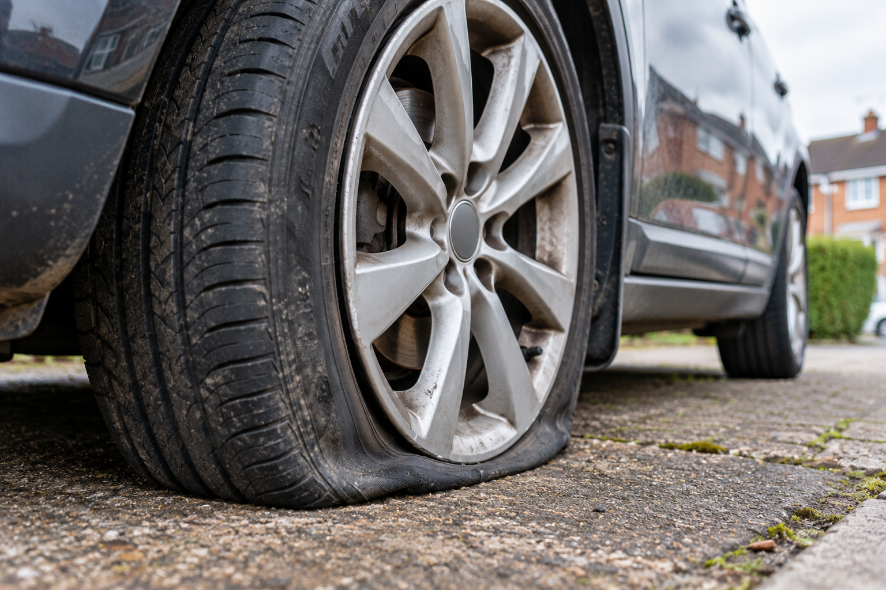

Vehicles are moved because of mechanical faults, accident damage, electrical problems, failed batteries or simply because they have been bought as non-runners. The important question is not only whether the engine starts, but what condition the vehicle is in and how it can be loaded safely.
A car that rolls freely and steers may be relatively straightforward to load. A vehicle with locked wheels, damaged suspension or restricted access can require a different approach.
That is why accurate information about the vehicle before collection matters.
What Does “Non-Running” Actually Mean?
“Non-running” can describe very different situations.
A vehicle might not start but otherwise roll, steer and brake normally. Another may have been standing for several years with seized brakes. An accident-damaged vehicle might have a wheel pointing in the wrong direction or bodywork obstructing a tyre.
Examples include a vehicle that:
- has a flat or failed battery;
- has an engine or gearbox fault;
- starts but cannot be driven safely;
- will not start at all;
- has flat or damaged tyres;
- has seized or locked wheels;
- does not steer normally;
- has damaged suspension;
- has been involved in an accident;
- has been stored for a long period;
- has been purchased as a project or restoration vehicle.
These conditions can make a substantial difference to loading.
A vehicle not starting does not automatically make transport difficult. What matters is whether it can roll, steer and be loaded safely.
Can a Car That Does Not Start Be Loaded Onto a Recovery Vehicle?
In many cases, yes.
A non-running vehicle can potentially be loaded using recovery equipment rather than being driven onto the transporter.
The operator does, however, need to understand the vehicle's condition beforehand.
There is a considerable difference between a car that simply has a dead battery and one with four seized wheels.
The collection location matters too. A vehicle sitting on an open driveway may be considerably easier to access than the same vehicle inside a narrow garage, underground car park or tightly parked between other vehicles.
This is why a description of the mechanical fault alone is not always enough.
What If the Car Will Not Roll?
A vehicle may refuse to roll because of:
- seized brakes;
- a transmission or parking mechanism that cannot be released;
- accident damage;
- damaged wheel or suspension components;
- flat or collapsed tyres;
- wheels that have become locked after long-term storage.
This does not necessarily mean that the vehicle cannot be transported. It means its condition needs to be considered when planning how it will be loaded.
Trying to drag or force a vehicle without considering its condition can cause additional damage.
What If the Vehicle Does Not Steer?
A vehicle that rolls but cannot steer presents a different loading problem from one that can be guided normally.
Steering problems may result from mechanical failure, accident damage, a locked steering system or damaged suspension.
Photographs can be particularly useful in these circumstances because they allow the operator to see the position of the wheels and any obvious damage before collection.

Flat Tyres, Missing Wheels and Suspension Damage
A flat tyre does not automatically prevent vehicle transport, but more substantial wheel or suspension damage may change how the vehicle needs to be handled.
Important details include whether:
- a tyre is completely flat;
- a wheel is damaged;
- a wheel is missing;
- the suspension has collapsed;
- a wheel is locked or pointing at an unusual angle;
- part of the vehicle is touching the ground.
For an accident-damaged vehicle, photographs of the damaged area can help establish its condition before collection.
DVSA load-securing guidance recognises that the condition of damaged or salvage vehicles can affect how they are secured for transport.
Access Can Matter as Much as the Vehicle
Customers naturally tend to concentrate on what is wrong with the car, but where the vehicle is located can be equally important.
Consider whether the vehicle is:
- on a driveway;
- parked on a road;
- inside a garage;
- in an underground or multi-storey car park;
- behind gates;
- on soft or uneven ground;
- tightly surrounded by other vehicles;
- positioned somewhere with limited space in front or behind it.
Height restrictions are particularly important when a vehicle is inside a car park or other covered area.
If access looks difficult, photographs taken before collection can help the operator understand the location and avoid unexpected problems on arrival.
How Is a Vehicle Secured Once It Is Loaded?
Loading the vehicle is only part of the process. It also needs to remain secure during transport.
Current DVSA guidance explains that loads carried on vehicles must be secure regardless of the type of vehicle, the load or the length of the journey. Load security protects people involved in loading and transport as well as other road users.
For roadside recovery, DVSA guidance states that usually all four wheels of a vehicle transported on a recovery vehicle should be secured, while recognising limited situations where completing the full securing process at the roadside would itself create a safety risk.
For recovery transporter trailers, the guidance states that all four wheels must be secured. Where the condition of a damaged or salvage vehicle makes conventional wheel securing difficult, alternative securing arrangements may be necessary.
The appropriate securing method therefore depends on the vehicle, its condition and the equipment being used.
What About the Winch?
A winch can be used as part of the process of loading a non-running vehicle, but loading and securing are not the same thing.
DVSA guidance states that a fitted winch cable is not part of the vehicle's securing system for the journey.
The vehicle therefore still requires suitable restraint once loaded.
Loading a vehicle and securing a vehicle are two separate parts of the transport process.
Why Vehicle Weight Matters
The make and model should always be provided when requesting vehicle transport.
DVSA guidance requires vehicle operators to consider permitted gross and axle weight limits when planning loads. It also makes clear that there is no single securing solution suitable for every combination of vehicle and load.
An accurate vehicle description therefore helps determine whether the proposed transport arrangement is appropriate.
This can be particularly important with larger SUVs, vans, electric vehicles and other unusually heavy vehicles.

Is Transporting a Non-Runner the Same as Towing It?
Not necessarily.
There is an important distinction between carrying a vehicle on a recovery vehicle or transporter and towing a vehicle while some or all of its wheels remain on the road.
Conventional towing has its own legal and practical considerations and is not simply another name for vehicle transport.
For a planned movement of a non-running, damaged or recently purchased vehicle, the appropriate method will depend on the condition of the vehicle and the circumstances of the collection.
What Information Should You Give Before Collection?
You do not need to diagnose the mechanical fault yourself.
Instead, provide practical information about what the vehicle can and cannot do.
The most useful information includes:
- Vehicle make and model
- Collection postcode
- Destination postcode
- Whether the engine starts
- Whether the vehicle can be driven
- Whether all wheels roll
- Whether the vehicle steers
- Whether the brakes appear to be locked
- Whether any tyres are flat
- Whether there is accident or suspension damage
- Whether access to the vehicle is restricted
Photos are particularly useful when there is visible damage, an unusual wheel position or difficult access.
You do not need to know every technical detail. If you are unsure whether something is relevant, mention it when requesting transport.
Buying a Non-Running Vehicle?
Non-running cars are frequently sold as project vehicles, restoration cars, accident-damaged vehicles or vehicles requiring mechanical repair.
Before arranging collection, ask the seller to confirm:
- whether the vehicle rolls;
- whether it steers;
- whether the brakes are free;
- whether all four wheels and tyres are present;
- whether there is significant accident damage;
- where exactly the vehicle is parked;
- whether there is sufficient access for collection.
If possible, request recent photographs rather than relying solely on the description in an advert.
This can make arranging the correct transport considerably simpler.
THE SIMPLE RULE
“Non-running” does not tell the whole story.
A non-running vehicle can often be transported. The useful questions are: Does it roll? Does it steer? Are the wheels and tyres intact? Is it damaged? Can the vehicle be accessed safely?
Providing these details before collection allows the transport requirements to be considered properly. For ResQ Direct, this means we can discuss the vehicle and collection location with you before arranging the movement rather than discovering an important issue on arrival.
SOURCES
Sources & Further Information
Driver and Vehicle Standards Agency (DVSA)
Securing loads on HGVs and goods vehicles — current code of practice covering load security in England, Scotland and Wales.
View GOV.UK guidance →Driver and Vehicle Standards Agency (DVSA)
How to carry different types of load — including damaged and salvage vehicles, roadside recovery and recovery transporter trailers.
View GOV.UK guidance →Driver and Vehicle Standards Agency (DVSA)
Load securing: the basics — including suitable securing systems and gross and axle weight considerations.
View GOV.UK guidance →Driver and Vehicle Standards Agency (DVSA)
About the code of practice — explaining the status and terminology used in the DVSA load-securing guidance.
View GOV.UK guidance →GOV.UK / DVSA
Running a vehicle recovery business: driver and vehicle safety rules.
View GOV.UK guidance →Contains public sector information licensed under the Open Government Licence v3.0.